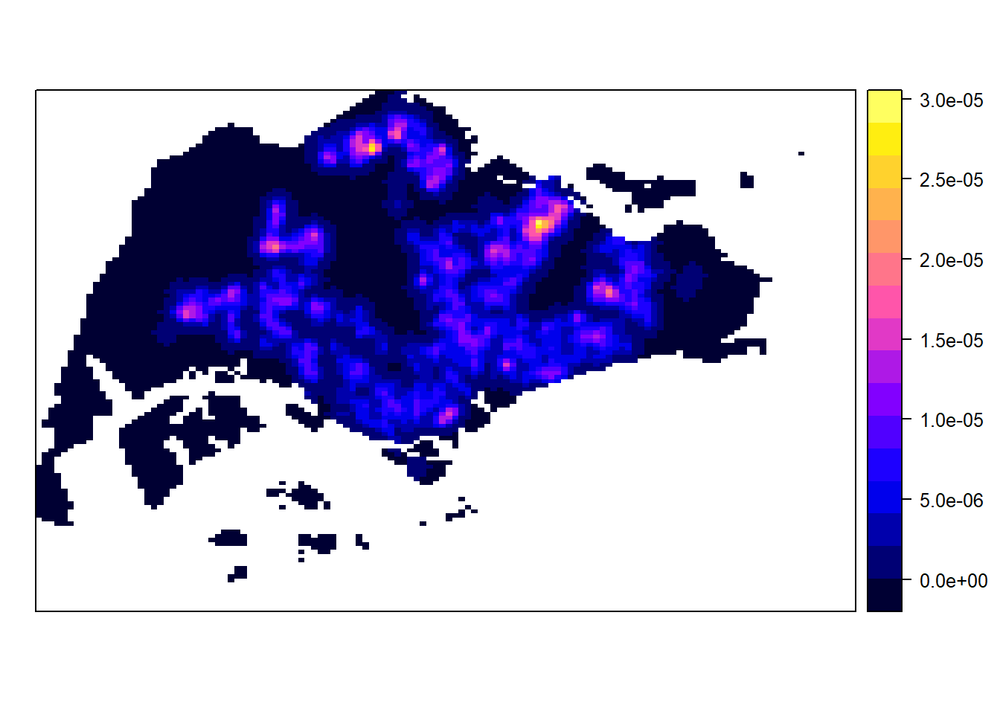
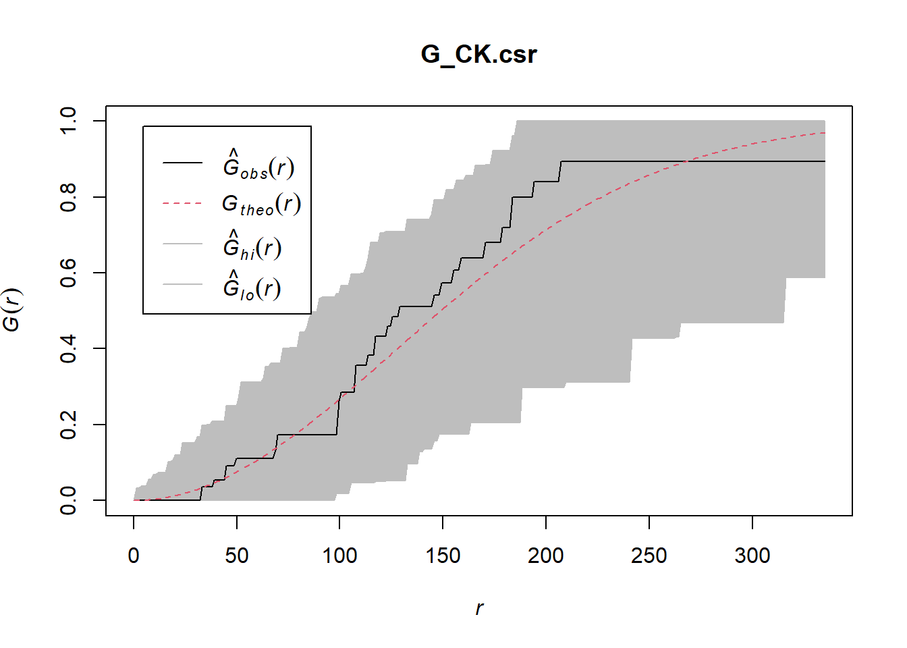
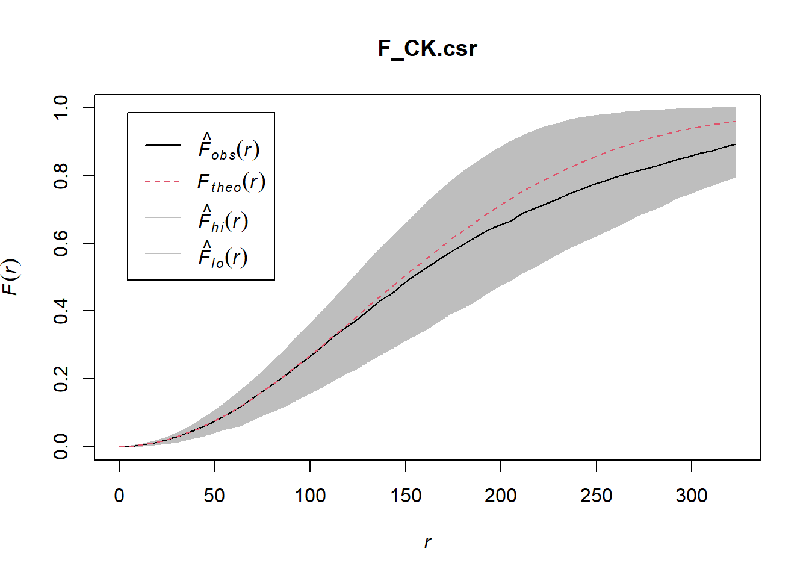
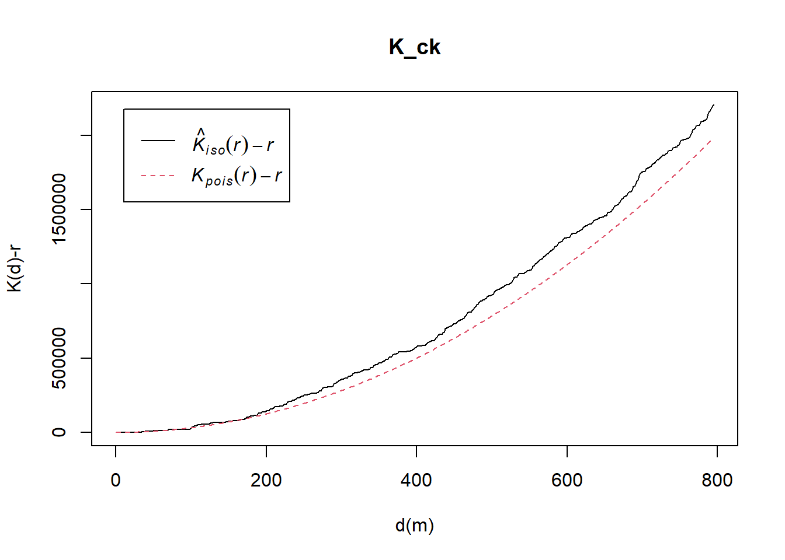
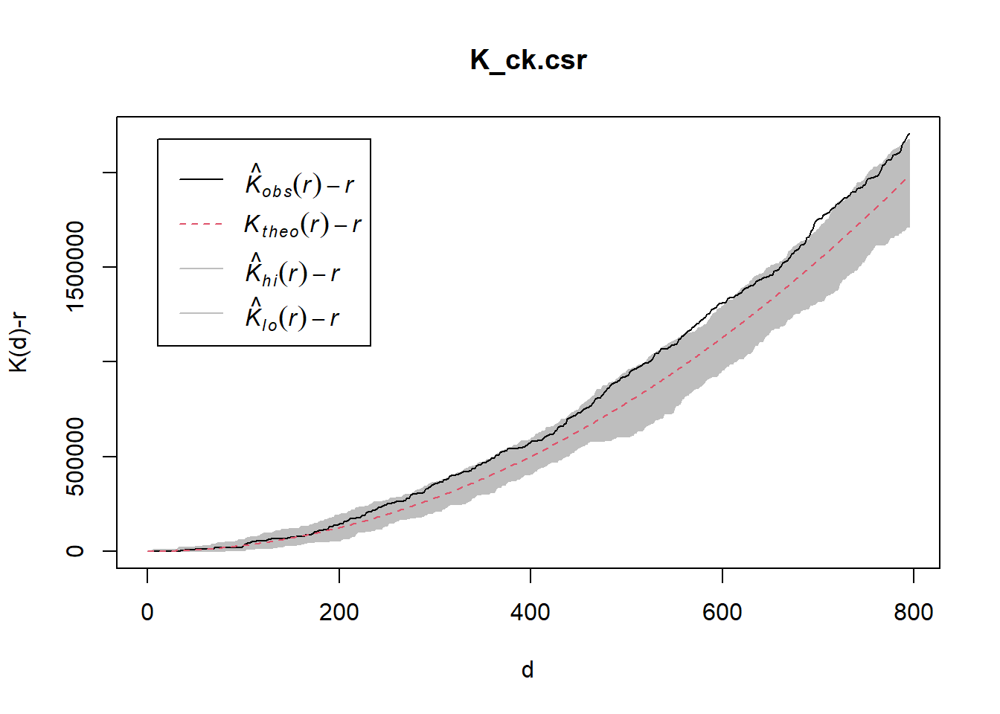
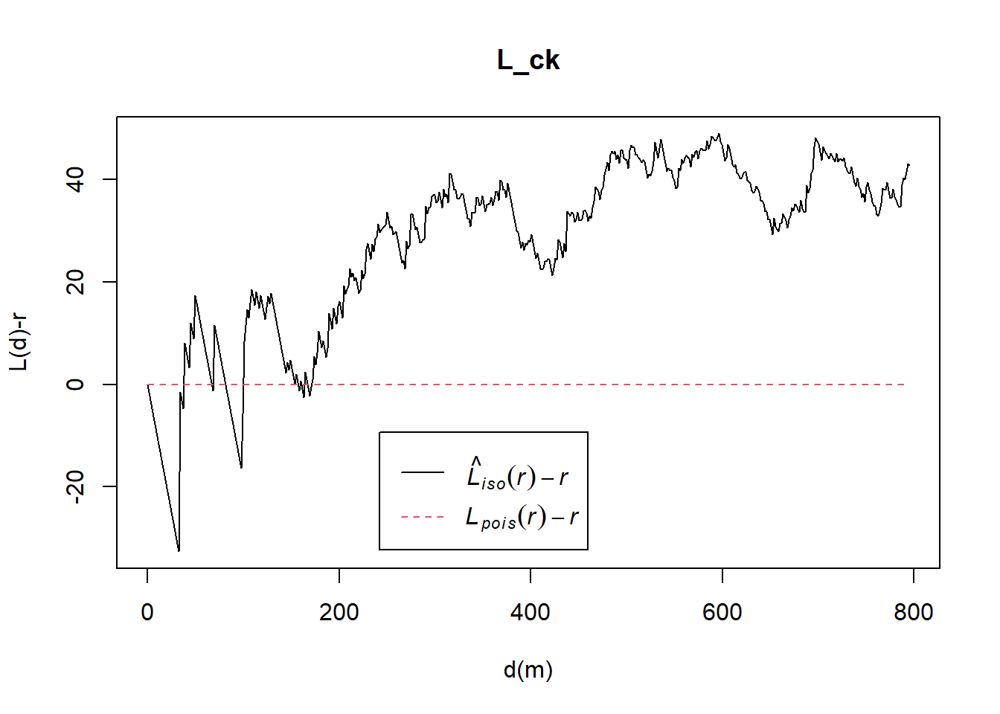
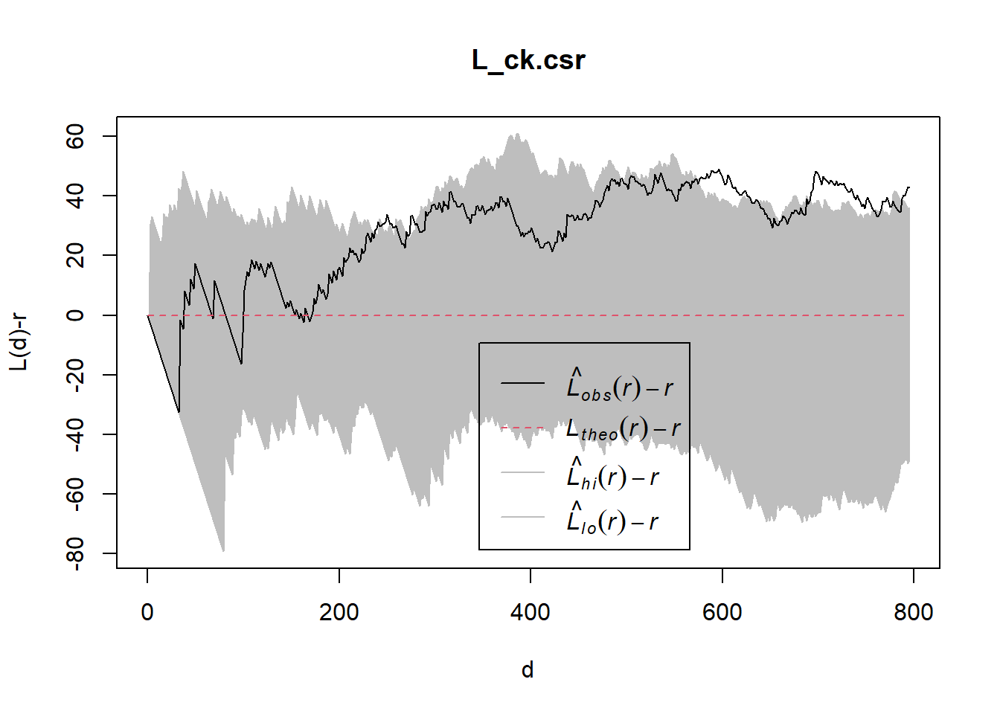

pacman::p_load(maptools, sf, raster, spatstat, tmap)In-Class Exercise 4: 2nd Order Spatial Point Patterns Analysis
1 Overview
Spatial point processes of childcare centers in Singapore using 2nd order spatial point pattern analysis methods.
Importing spatial data - use sfpackage
# point feature data providing both location and attribute info of childcare centres
childcare_sf <- st_read("data/child-care-services-geojson.geojson") %>%
st_transform(crs = 3414)Reading layer `child-care-services-geojson' from data source
`C:\guga-nesh\IS415-GAA\in-class_ex\in-class_ex04\data\child-care-services-geojson.geojson'
using driver `GeoJSON'
Simple feature collection with 1545 features and 2 fields
Geometry type: POINT
Dimension: XYZ
Bounding box: xmin: 103.6824 ymin: 1.248403 xmax: 103.9897 ymax: 1.462134
z_range: zmin: 0 zmax: 0
Geodetic CRS: WGS 84# polygon feature data showing the national boundary of Singapore
sg_sf <- st_read(dsn = "data", layer="CostalOutline")Reading layer `CostalOutline' from data source
`C:\guga-nesh\IS415-GAA\in-class_ex\in-class_ex04\data' using driver `ESRI Shapefile'
Simple feature collection with 60 features and 4 fields
Geometry type: POLYGON
Dimension: XY
Bounding box: xmin: 2663.926 ymin: 16357.98 xmax: 56047.79 ymax: 50244.03
Projected CRS: SVY21# polygon feature data providing info of URA 2014 MasterPlan Planning Subzone boundary data
mpsz_sf <- st_read(dsn = "data",
layer = "MP14_SUBZONE_WEB_PL")Reading layer `MP14_SUBZONE_WEB_PL' from data source
`C:\guga-nesh\IS415-GAA\in-class_ex\in-class_ex04\data' using driver `ESRI Shapefile'
Simple feature collection with 323 features and 15 fields
Geometry type: MULTIPOLYGON
Dimension: XY
Bounding box: xmin: 2667.538 ymin: 15748.72 xmax: 56396.44 ymax: 50256.33
Projected CRS: SVY21# Dataframe with geometric properties
# this is spatial data in the sf form
# while this is fine with most functions (tidyverse family) that work well with tibble dataframe
# but do take note will you need to drop the geometric properties for other methods...Plotting the map of childcare centers:
# tmap_mode("plot") #view
# tm_shape(childcare_sf)+
# tm_dots(alph=0.5, # transparency (intensity of colour based on value)
# size=0.01)+
# tm_view(set.zoom.limits=c(11,24)) # zoom-out value, zoom-in value# tm_shape(sg_sf) +
# tm_polygons() +
# tm_shape(mpsz_sf) +
# tm_polygons() +
# tm_shape(childcare_sf)+
# tm_dots()Converting sf dataframe into SpatialPointsDataFrame.
# because we want to use spatstat which requires analytical data in ppp object form we need to convert the data
childcare <- as_Spatial(childcare_sf)
mpsz <- as_Spatial(mpsz_sf)
sg <- as_Spatial(sg_sf)Display the information of these 3 Spatial classes
childcare #Geometry type = POINTclass : SpatialPointsDataFrame
features : 1545
extent : 11203.01, 45404.24, 25667.6, 49300.88 (xmin, xmax, ymin, ymax)
crs : +proj=tmerc +lat_0=1.36666666666667 +lon_0=103.833333333333 +k=1 +x_0=28001.642 +y_0=38744.572 +ellps=WGS84 +towgs84=0,0,0,0,0,0,0 +units=m +no_defs
variables : 2
names : Name, Description
min values : kml_1, <center><table><tr><th colspan='2' align='center'><em>Attributes</em></th></tr><tr bgcolor="#E3E3F3"> <th>ADDRESSBLOCKHOUSENUMBER</th> <td></td> </tr><tr bgcolor=""> <th>ADDRESSBUILDINGNAME</th> <td></td> </tr><tr bgcolor="#E3E3F3"> <th>ADDRESSPOSTALCODE</th> <td>018989</td> </tr><tr bgcolor=""> <th>ADDRESSSTREETNAME</th> <td>1, MARINA BOULEVARD, #B1 - 01, ONE MARINA BOULEVARD, SINGAPORE 018989</td> </tr><tr bgcolor="#E3E3F3"> <th>ADDRESSTYPE</th> <td></td> </tr><tr bgcolor=""> <th>DESCRIPTION</th> <td></td> </tr><tr bgcolor="#E3E3F3"> <th>HYPERLINK</th> <td></td> </tr><tr bgcolor=""> <th>LANDXADDRESSPOINT</th> <td>0</td> </tr><tr bgcolor="#E3E3F3"> <th>LANDYADDRESSPOINT</th> <td>0</td> </tr><tr bgcolor=""> <th>NAME</th> <td>THE LITTLE SKOOL-HOUSE INTERNATIONAL PTE. LTD.</td> </tr><tr bgcolor="#E3E3F3"> <th>PHOTOURL</th> <td></td> </tr><tr bgcolor=""> <th>ADDRESSFLOORNUMBER</th> <td></td> </tr><tr bgcolor="#E3E3F3"> <th>INC_CRC</th> <td>08F73931F4A691F4</td> </tr><tr bgcolor=""> <th>FMEL_UPD_D</th> <td>20200826094036</td> </tr><tr bgcolor="#E3E3F3"> <th>ADDRESSUNITNUMBER</th> <td></td> </tr></table></center>
max values : kml_999, <center><table><tr><th colspan='2' align='center'><em>Attributes</em></th></tr><tr bgcolor="#E3E3F3"> <th>ADDRESSBLOCKHOUSENUMBER</th> <td></td> </tr><tr bgcolor=""> <th>ADDRESSBUILDINGNAME</th> <td></td> </tr><tr bgcolor="#E3E3F3"> <th>ADDRESSPOSTALCODE</th> <td>829646</td> </tr><tr bgcolor=""> <th>ADDRESSSTREETNAME</th> <td>200, PONGGOL SEVENTEENTH AVENUE, SINGAPORE 829646</td> </tr><tr bgcolor="#E3E3F3"> <th>ADDRESSTYPE</th> <td></td> </tr><tr bgcolor=""> <th>DESCRIPTION</th> <td>Child Care Services</td> </tr><tr bgcolor="#E3E3F3"> <th>HYPERLINK</th> <td></td> </tr><tr bgcolor=""> <th>LANDXADDRESSPOINT</th> <td>0</td> </tr><tr bgcolor="#E3E3F3"> <th>LANDYADDRESSPOINT</th> <td>0</td> </tr><tr bgcolor=""> <th>NAME</th> <td>RAFFLES KIDZ @ PUNGGOL PTE LTD</td> </tr><tr bgcolor="#E3E3F3"> <th>PHOTOURL</th> <td></td> </tr><tr bgcolor=""> <th>ADDRESSFLOORNUMBER</th> <td></td> </tr><tr bgcolor="#E3E3F3"> <th>INC_CRC</th> <td>379D017BF244B0FA</td> </tr><tr bgcolor=""> <th>FMEL_UPD_D</th> <td>20200826094036</td> </tr><tr bgcolor="#E3E3F3"> <th>ADDRESSUNITNUMBER</th> <td></td> </tr></table></center> mpsz # Spatial Polygons DataFrameclass : SpatialPolygonsDataFrame
features : 323
extent : 2667.538, 56396.44, 15748.72, 50256.33 (xmin, xmax, ymin, ymax)
crs : +proj=tmerc +lat_0=1.36666666666667 +lon_0=103.833333333333 +k=1 +x_0=28001.642 +y_0=38744.572 +datum=WGS84 +units=m +no_defs
variables : 15
names : OBJECTID, SUBZONE_NO, SUBZONE_N, SUBZONE_C, CA_IND, PLN_AREA_N, PLN_AREA_C, REGION_N, REGION_C, INC_CRC, FMEL_UPD_D, X_ADDR, Y_ADDR, SHAPE_Leng, SHAPE_Area
min values : 1, 1, ADMIRALTY, AMSZ01, N, ANG MO KIO, AM, CENTRAL REGION, CR, 00F5E30B5C9B7AD8, 16409, 5092.8949, 19579.069, 871.554887798, 39437.9352703
max values : 323, 17, YUNNAN, YSSZ09, Y, YISHUN, YS, WEST REGION, WR, FFCCF172717C2EAF, 16409, 50424.7923, 49552.7904, 68083.9364708, 69748298.792 sg # Spatial Polygons DataFrameclass : SpatialPolygonsDataFrame
features : 60
extent : 2663.926, 56047.79, 16357.98, 50244.03 (xmin, xmax, ymin, ymax)
crs : +proj=tmerc +lat_0=1.36666666666667 +lon_0=103.833333333333 +k=1 +x_0=28001.642 +y_0=38744.572 +datum=WGS84 +units=m +no_defs
variables : 4
names : GDO_GID, MSLINK, MAPID, COSTAL_NAM
min values : 1, 1, 0, ISLAND LINK
max values : 60, 67, 0, SINGAPORE - MAIN ISLAND Converting SpatialPointsDataFrame into Formal Class SpatialPoints
childcare_sp <- as(childcare, "SpatialPoints")
sg_sp <- as(sg, "SpatialPolygons")Converting them into ppp format to be understood by spatstat
childcare_ppp = as(childcare_sp, "ppp")Handling duplicated point events
# check whether there is any duplicate points and push the datapoints slightly through jittering to avoid duplication.
childcare_ppp_jit <- rjitter(childcare_ppp,
retry=TRUE,
nsim=1,
drop=TRUE)
any(duplicated(childcare_ppp_jit))[1] FALSEsummary(childcare_ppp_jit)Planar point pattern: 1545 points
Average intensity 1.91145e-06 points per square unit
Coordinates are given to 3 decimal places
i.e. rounded to the nearest multiple of 0.001 units
Window: rectangle = [11203.01, 45404.24] x [25667.6, 49300.88] units
(34200 x 23630 units)
Window area = 808287000 square unitsCreating an owin object to confine the analysis within a geographical area (in this case, Singapore boundary)
sg_owin <- as(sg_sp, "owin")
childcareSG_ppp = childcare_ppp[sg_owin]
plot(childcareSG_ppp)summary(childcareSG_ppp)Planar point pattern: 1545 points
Average intensity 2.063463e-06 points per square unit
*Pattern contains duplicated points*
Coordinates are given to 3 decimal places
i.e. rounded to the nearest multiple of 0.001 units
Window: polygonal boundary
60 separate polygons (no holes)
vertices area relative.area
polygon 1 38 1.56140e+04 2.09e-05
polygon 2 735 4.69093e+06 6.27e-03
polygon 3 49 1.66986e+04 2.23e-05
polygon 4 76 3.12332e+05 4.17e-04
polygon 5 5141 6.36179e+08 8.50e-01
polygon 6 42 5.58317e+04 7.46e-05
polygon 7 67 1.31354e+06 1.75e-03
polygon 8 15 4.46420e+03 5.96e-06
polygon 9 14 5.46674e+03 7.30e-06
polygon 10 37 5.26194e+03 7.03e-06
polygon 11 53 3.44003e+04 4.59e-05
polygon 12 74 5.82234e+04 7.78e-05
polygon 13 69 5.63134e+04 7.52e-05
polygon 14 143 1.45139e+05 1.94e-04
polygon 15 165 3.38736e+05 4.52e-04
polygon 16 130 9.40465e+04 1.26e-04
polygon 17 19 1.80977e+03 2.42e-06
polygon 18 16 2.01046e+03 2.69e-06
polygon 19 93 4.30642e+05 5.75e-04
polygon 20 90 4.15092e+05 5.54e-04
polygon 21 721 1.92795e+06 2.57e-03
polygon 22 330 1.11896e+06 1.49e-03
polygon 23 115 9.28394e+05 1.24e-03
polygon 24 37 1.01705e+04 1.36e-05
polygon 25 25 1.66227e+04 2.22e-05
polygon 26 10 2.14507e+03 2.86e-06
polygon 27 190 2.02489e+05 2.70e-04
polygon 28 175 9.25904e+05 1.24e-03
polygon 29 1993 9.99217e+06 1.33e-02
polygon 30 38 2.42492e+04 3.24e-05
polygon 31 24 6.35239e+03 8.48e-06
polygon 32 53 6.35791e+05 8.49e-04
polygon 33 41 1.60161e+04 2.14e-05
polygon 34 22 2.54368e+03 3.40e-06
polygon 35 30 1.08382e+04 1.45e-05
polygon 36 327 2.16921e+06 2.90e-03
polygon 37 111 6.62927e+05 8.85e-04
polygon 38 90 1.15991e+05 1.55e-04
polygon 39 98 6.26829e+04 8.37e-05
polygon 40 415 3.25384e+06 4.35e-03
polygon 41 222 1.51142e+06 2.02e-03
polygon 42 107 6.33039e+05 8.45e-04
polygon 43 7 2.48299e+03 3.32e-06
polygon 44 17 3.28303e+04 4.38e-05
polygon 45 26 8.34758e+03 1.11e-05
polygon 46 177 4.67446e+05 6.24e-04
polygon 47 16 3.19460e+03 4.27e-06
polygon 48 15 4.87296e+03 6.51e-06
polygon 49 66 1.61841e+04 2.16e-05
polygon 50 149 5.63430e+06 7.53e-03
polygon 51 609 2.62570e+07 3.51e-02
polygon 52 8 7.82256e+03 1.04e-05
polygon 53 976 2.33447e+07 3.12e-02
polygon 54 55 8.25379e+04 1.10e-04
polygon 55 976 2.33447e+07 3.12e-02
polygon 56 61 3.33449e+05 4.45e-04
polygon 57 6 1.68410e+04 2.25e-05
polygon 58 4 9.45963e+03 1.26e-05
polygon 59 46 6.99702e+05 9.35e-04
polygon 60 13 7.00873e+04 9.36e-05
enclosing rectangle: [2663.93, 56047.79] x [16357.98, 50244.03] units
(53380 x 33890 units)
Window area = 748741000 square units
Fraction of frame area: 0.4141.1 1st Order Spatial Analysis
- deriving kernel density estimation (KDE) layer for visualising and exploring the intensity of point processes
Calculating KDE using fixed bandwidth
# bw.diggle() automatic bandwidth selection method
# spatial interpolation is gaussian
# intensity estimate is correct for edge bias
# rescalling to convert unit of measurement from m to km
# makes it easier to comprehend the KDE
# Look at the scale, 0-5 childcare centers within a search radius of 1km
childcareSG_ppp.km = rescale(childcareSG_ppp, 1000, "km")
# computing KDE using fixed bandwidth
kde_childcareSG_bw <- density(childcareSG_ppp,
sigma=bw.diggle,
edge=TRUE,
kernel="gaussian")
plot(kde_childcareSG_bw)# please note that there are other bandwidth calculation methods other than bw.diggle
# bw.CvL
# bw.scott
# bw.pplThere are two ways to compute KDE using adaptive bandwidth:
densityVoronoidensityAdaptiveKernal
kde_childcareSG_adaptive <- adaptive.density(childcareSG_ppp.km, method="kernel")
plot(kde_childcareSG_adaptive)This KDE map shown above is an image file. It does not have any coordinates and we don’t know exactly where the location is. So we need to convert the image into Grid Object.
gridded_kde_childcareSG_bw <- as.SpatialGridDataFrame.im(kde_childcareSG_bw)
spplot(gridded_kde_childcareSG_bw)
# then we create a rasterlayer
kde_childcareSG_bw_raster <- raster(gridded_kde_childcareSG_bw)
# but the crs property will be NA - so we will add the appropriate crs
projection(kde_childcareSG_bw_raster) <- CRS("+init=EPSG:3414")
kde_childcareSG_bw_rasterclass : RasterLayer
dimensions : 128, 128, 16384 (nrow, ncol, ncell)
resolution : 417.0614, 264.7348 (x, y)
extent : 2663.926, 56047.79, 16357.98, 50244.03 (xmin, xmax, ymin, ymax)
crs : +init=EPSG:3414
source : memory
names : v
values : -9.998042e-21, 2.851831e-05 (min, max)tm_shape(kde_childcareSG_bw_raster) +
tm_raster("v") +
tm_layout(legend.position = c("right", "bottom"), frame = FALSE)- performing confirmatory spatial point patterns analysis by using nearest neighbour statistics
1.2 2nd Order Spatial Analysis
# extract study area
pg = mpsz[mpsz@data$PLN_AREA_N == "PUNGGOL",]
tm = mpsz[mpsz@data$PLN_AREA_N == "TAMPINES",]
ck = mpsz[mpsz@data$PLN_AREA_N == "CHOA CHU KANG",]
jw = mpsz[mpsz@data$PLN_AREA_N == "JURONG WEST",]
# convert the spatial polygons dataframe into generic spatialpolygon layers
pg_sp = as(pg, "SpatialPolygons")
tm_sp = as(tm, "SpatialPolygons")
ck_sp = as(ck, "SpatialPolygons")
jw_sp = as(jw, "SpatialPolygons")
# creating owin object
pg_owin = as(pg_sp, "owin")
tm_owin = as(tm_sp, "owin")
ck_owin = as(ck_sp, "owin")
jw_owin = as(jw_sp, "owin")
# combining childcare points and study area
childcare_pg_ppp = childcare_ppp_jit[pg_owin]
childcare_tm_ppp = childcare_ppp_jit[tm_owin]
childcare_ck_ppp = childcare_ppp_jit[ck_owin]
childcare_jw_ppp = childcare_ppp_jit[jw_owin]
# rescale() to km
childcare_pg_ppp.km = rescale(childcare_pg_ppp, 1000, "km")
childcare_tm_ppp.km = rescale(childcare_tm_ppp, 1000, "km")
childcare_ck_ppp.km = rescale(childcare_ck_ppp, 1000, "km")
childcare_jw_ppp.km = rescale(childcare_jw_ppp, 1000, "km")
# plot all study areas
par(mfrow=c(2,2))
plot(childcare_pg_ppp.km, main="Punggol")
plot(childcare_tm_ppp.km, main="Tampines")
plot(childcare_ck_ppp.km, main="Choa Chu Kang")
plot(childcare_jw_ppp.km, main="Jurong West")- G-function - measures the distribution of the distances from an arbitrary event to its nearest event.
# Gest() is used to compute the G-function estimation
# envelope() is used to perform monte carlo simulation
G_CK = Gest(childcare_ck_ppp, correction = "border")
plot(G_CK, xlim=c(0,500))# H0: the distribution of childcare services at CCK are randomly distributed
# H1: the distribution of childcare services at CCK are not randomly distributed
# Null hypothesis is rejected if p-value is smaller than alpha value of 0.001
# 49 - 95%, 99 - 99%, 999 - 99.9%
G_CK.csr <- envelope(childcare_ck_ppp, Gest, nsim = 999)Generating 999 simulations of CSR ...
1, 2, 3, ......10.........20.........30.........40.........50.........60........
.70.........80.........90.........100.........110.........120.........130......
...140.........150.........160.........170.........180.........190.........200....
.....210.........220.........230.........240.........250.........260.........270..
.......280.........290.........300.........310.........320.........330.........340
.........350.........360.........370.........380.........390.........400........
.410.........420.........430.........440.........450.........460.........470......
...480.........490.........500.........510.........520.........530.........540....
.....550.........560.........570.........580.........590.........600.........610..
.......620.........630.........640.........650.........660.........670.........680
.........690.........700.........710.........720.........730.........740........
.750.........760.........770.........780.........790.........800.........810......
...820.........830.........840.........850.........860.........870.........880....
.....890.........900.........910.........920.........930.........940.........950..
.......960.........970.........980.........990........ 999.
Done.plot(G_CK.csr)
How to analyse the above-mentioned graph:
There is insufficient statistical evidence to reject the null hypothesis that the distribution is random.
How to read the graph:
Anything below the red line is regular pattern, anything above shows clustering. Inside the grey area, cannot reject the null hypothesis, outside grey area = statistically significant to reject.
- F-function
F_CK = Fest(childcare_ck_ppp) # can do correction = "best"
plot(F_CK)F_CK.csr <- envelope(childcare_ck_ppp, Fest, nsim = 999)Generating 999 simulations of CSR ...
1, 2, 3, ......10.........20.........30.........40.........50.........60........
.70.........80.........90.........100.........110.........120.........130......
...140.........150.........160.........170.........180.........190.........200....
.....210.........220.........230.........240.........250.........260.........270..
.......280.........290.........300.........310.........320.........330.........340
.........350.........360.........370.........380.........390.........400........
.410.........420.........430.........440.........450.........460.........470......
...480.........490.........500.........510.........520.........530.........540....
.....550.........560.........570.........580.........590.........600.........610..
.......620.........630.........640.........650.........660.........670.........680
.........690.........700.........710.........720.........730.........740........
.750.........760.........770.........780.........790.........800.........810......
...820.........830.........840.........850.........860.........870.........880....
.....890.........900.........910.........920.........930.........940.........950..
.......960.........970.........980.........990........ 999.
Done.plot(F_CK.csr)
- K-function
K_ck = Kest(childcare_ck_ppp, correction = "Ripley")
plot(K_ck, . -r ~ r, ylab= "K(d)-r", xlab = "d(m)")
K_ck.csr <- envelope(childcare_ck_ppp, Kest, nsim = 99, rank = 1, glocal=TRUE)Generating 99 simulations of CSR ...
1, 2, 3, 4, 5, 6, 7, 8, 9, 10, 11, 12, 13, 14, 15, 16, 17, 18, 19, 20, 21, 22, 23, 24, 25, 26, 27, 28, 29, 30, 31, 32, 33, 34, 35, 36, 37, 38, 39, 40,
41, 42, 43, 44, 45, 46, 47, 48, 49, 50, 51, 52, 53, 54, 55, 56, 57, 58, 59, 60, 61, 62, 63, 64, 65, 66, 67, 68, 69, 70, 71, 72, 73, 74, 75, 76, 77, 78, 79, 80,
81, 82, 83, 84, 85, 86, 87, 88, 89, 90, 91, 92, 93, 94, 95, 96, 97, 98, 99.
Done.plot(K_ck.csr, . - r ~ r, xlab="d", ylab="K(d)-r")
- L-function
L_ck = Lest(childcare_ck_ppp, correction = "Ripley")
plot(L_ck, . -r ~ r,
ylab= "L(d)-r", xlab = "d(m)")
L_ck.csr <- envelope(childcare_ck_ppp, Lest, nsim = 99, rank = 1, glocal=TRUE)Generating 99 simulations of CSR ...
1, 2, 3, 4, 5, 6, 7, 8, 9, 10, 11, 12, 13, 14, 15, 16, 17, 18, 19, 20, 21, 22, 23, 24, 25, 26, 27, 28, 29, 30, 31, 32, 33, 34, 35, 36, 37, 38, 39, 40,
41, 42, 43, 44, 45, 46, 47, 48, 49, 50, 51, 52, 53, 54, 55, 56, 57, 58, 59, 60, 61, 62, 63, 64, 65, 66, 67, 68, 69, 70, 71, 72, 73, 74, 75, 76, 77, 78, 79, 80,
81, 82, 83, 84, 85, 86, 87, 88, 89, 90, 91, 92, 93, 94, 95, 96, 97, 98, 99.
Done.plot(L_ck.csr, . - r ~ r, xlab="d", ylab="L(d)-r")